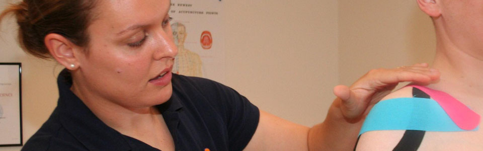
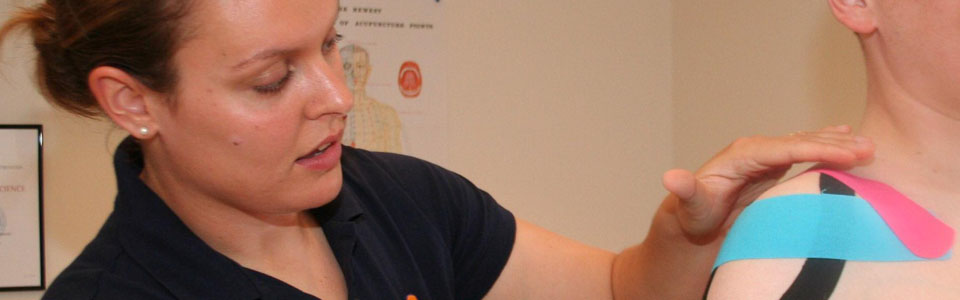

Services & Treatments
I offer specialist injury treatment and advice, sports and athletic coaching amongst other professional sports services listed below. I am available to work with individuals, local sports teams, and schools. I offer treatment in a professional clinic environment, at clubs and events or mobile in the comfort of your own home*.
Contact Anna Hopcroft for more details.
I can provide the following professional sports services at competitive rates; Please note: Your first appointment will be up to 90 minutes to allow time for assessment of your injury.
Sports Injury Treatment
Sports Massage Therapy & Injury Assessment
Sports massage therapy involves a number of advanced techniques to treat sports injuries and chronic pain effectively. Sports massage can be used to treat the following sports injuries such as shin splints, runners knee, tennis elbow, and plantar fasciitis. It can relieve tired and aching muscles, after a hard training session or competition, or be used as a warm-up prior to an event. Advanced assessment techniques including postural assessment, gait analysis, range of movement testing, muscle testing, and specific tests are all used to gain a better picture of your sports injury or pain condition. Sports massage involves the following techniques; Soft tissue release, myofascial release & connective tissue therapy, deep tissue massage, pre & post event massage, trigger point therapy (NMT's), stretching (MET & PNF), joint mobilisation, sports first aid, sports strapping**, Ultrasound, Medical Acupuncture, Electro-Acupuncture, Kinesio® or Rock® taping**. I use a combination of these advanced techniques alongside exercise rehabilitation to get you back on your feet from injury quickly and effectively, providing many self-help ideas and solutions too.
Appointments- 30 minutes £25.00, 45 minutes £35.00, 60 minutes £40.00*, First Appointment- up to 90 minutes £50.00
Sports First Aid & Pitch-side Treatment
Sports first aid treatment is vital after an acute or chronic injury flare up to help with healing and recovery. First aid treatments include injury assessment, sports strapping and taping, cryotherapy, thermotherapy, massage, rehabilitation advise and self-treatment advise. This service is available for clubs, schools or individuals.
Emergency appointments out of hours- before 7am/after 7pm available within 24 hours of injury for home call outs only- 30 minutes £35.00, 45 minutes £50.00 including taping/ strapping as required
Appointments- 30 minutes £25.00, 45 minutes £35.00, 60 minutes £40.00*
For work with sports teams, schools and clubs please contact Anna Hopcroft directly for a bespoke service.
Postural & Running Gait Assessment
Although this can be part of other treatments I also offer this as a separate service to really investigate your sports injuries or pain condition further. Sports footwear advice is also part of this service, including a footwear prescription. Video analysis can be also be done if you have access to a treadmill with an analysis DVD supplied at an extra cost.
Appointments- 30 minutes £25.00, 45 minutes £35.00
Video analysis- add an extra £15.00 including DVD.
This can be done with teams or groups of individuals at a corporate rate contact Anna Hopcroft directly for more details.
Coaching Services
Olympic Lifting Coaching
I run Sussex Strength, a BWL affiliated Olympic lifting club based in Hurstpierpoint. The club has been running for just over 18 months. All participants must attend an introductory session. Then they can attend group sessions or have one to one personal training sessions. Great discounts for members and a lovely group atmosphere in our group sessions. We cater for all abilities at the club, ranging from beginners to national level competitors.
Membership is £25 per annum, Optional BWL membership & insurance (recommended) £35 per annum
Groups Sessions £5 for members, £10 for non-members
One to one sessions £35 for members, £40 for non-members
Introduction sessions £40 for 60 minutes or £60 for 90 minutes
Strength & Conditioning Coaching
This service includes a combination of Strength & Conditioning alongside Sports Functional Training and Athletic Training to get you in great shape for your sport or back in shape after injury. This includes speed, agility and plyometric training as well as weight training and Olympic lifting. This is coupled with interval based conditioning and boxing for maximum fitness benefits. I can put together bespoke rehabilitation and training programs for training at home with limited equipment or at your local gym. I have use of a private gym space at Sussex Strength, Hurstpierpoint for 1 to 1 or small group training with no additional gym fees.
Appointments at Sussex Strength Gym- 60 minutes £40.00, 90 minutes £60.00, Group sessions from £5
Training programs- £30.00-£50.00 updated as required
Payment & bookings must be made in advance. Bookings are not transferable or refundable and rearranging appointments are subject to my cancellation policy below.
This service can be offered to your sports team, school or club please contact Anna Hopcroft directly to discuss your specific requirements.
Clinical Pilates Training
Clinical Pilates helps to retrain movement and function within the central 'core' whilst co-ordinating the limbs. The core muscles are made up of the spinal stabilisers, gluts, abdominal musculature and postural stabilisation muscles. This is a gentle form of exercise that can be used by sporty or non-sporty people for rehabilitation or to develop strength and endurance of the core musculature. This form of exercise is particularly useful for those suffering from SIJ dysfunction, recurrent hamstring tears, knee pain, neck pain, cervicogenic headaches, shoulder impingement, kyphosis, lordosis, scoliosis, spondylolythesis, and disc prolapse. As well as being a great tool to develop top sports performers into robust, strong athletes helping them perform more efficiently! Many exercises are incorporated into rehabilitation during treatments but this can also be done in a 1 to 1 session to really target the correct movement and retrain dysfunction in the body.
Appointments- 60 minutes £40 including 6 week individual program to be followed with progressions.
Professional Athletic & Sports Coaching
I am available to work with schools, universities, colleges, teams or individuals coaching sports and athletics. As a level 3 athletics coach I am fully qualified and insured to coach all athletic events and specialise in the throwing events, particularly hammer throwing, shot putt and discus. I also coach running technique, speed, agility and plyometrics for sports performance and hold the UKSCA Accreditation as a Strength & Conditioning Coach.
For more information on athletic or sports coaching please contact Anna Hopcroft directly to discuss your specific requirements.
Relaxation Treatments
Hot Rocks Massage
Naturally formed Basalt hot rocks are used to melt away tension in the muscles and further heat rises from the warmed couch. This is a deeply relaxing treatment that can be used for sports or deep tissue massage or for a pampering or relaxing full body massage. The heat from the rocks penetrates deep into the muscles and soothes away tension and aches & pains. A must have treatment for anyone! This treatment is also great for recovery from tough training or competitions particularly when finished with Cryo-stones to revive and stimulate! Deep tissue techniques are also included in this treatment. A Hot Rocks Massage makes a great present for friends. Gift vouchers available.
Appointments- 45 minutes £40.00, 60 minutes £45.00*, 90 minutes £65.00*
Relaxation Massage Treatment
Deep Tissue Massage & Myofascial release provide sustained relaxation of the superficial, deep muscles and soft tissues in the body. These techniques are also very effective in treating postural dysfunctions such as; scoliosis, lordosis & kyphosis. Chronic pain conditions such as; back pain, frozen shoulder, knee pain, RSI, arthritis, scoliosis, & tendonitis. Tight muscles and soft tissues. Deep tissue massage and MFR can help to release chronic tension and restrictions in the body that have developed over time and can be great for treating pain conditions or for an intense relaxing treatment. All deep tissue treatments use NYR Organics massage oils or Natural balms with your choice of essential oil pre-blends. For an added luxurious component or as a gift why not add Thermotherapy including hot stones treatment and a warmed couch for an extra £5.
Appointments- 45 minutes £35.00, 60 minutes £40.00*, 90 minutes £60.00*
Add Thermotherapy & Hot stones for an extra £5.00
Full Works Facial
Using NYR Organics luxurious range of eco-friendly, fair trade and award-winning skin care products and massage oils indulge yourself in this wonderful treatment. Choose from NYR Organics products such as the Rejuvenationg Frankincense Collection, Purifying Palmarosa Collection or Rehydrating Rose Collection. The Full Works Facial starts with a hot steam, cleanse & deep cleanse using skin matched NYR Organic products. A gentle yet effective exfoliator is then used followed by a Natural Lift Facial Massage to lift, firm & revive tired skin to boost radiance & reduce fine lines. To close pores a toner is used and quick spritz of White Tea or Frankincense Facial Mist is followed by a skin matched treatment balm or serum and a moisturiser. Eye & lip treatments are also used to complete the facial. For an extra indulgence you can add a face mask such as the Wild Rose Beauty Balm mask for a longer treatment which includes a neck & shoulder massage with a choice of Organic oils to help you deeply relax, treat unwanted knots & muscles tension with Anna's deep tissue techniques.Appointments- 60 minutes (including mask) £50.00*, 75 minutes (including mask & extended massage)£65.00*
Express Facial
This great value treatment takes just 30 minutes & can be added to any other treatment such as a full body Hot Rocks Massage or Deep Tissue Massage. The facial includes a cleanse, exfoliation, Natural Lift Facial Massage (NLFM), tone, treatment balm & moisturiser, & eye & lip treatments just like the Full Works Facial. Unlike the Full Works Facial, this treatment does not come with a full neck & shoulder massage and uses a shortened NLFM routine.Appointments- 30 minutes £30.00* (when added to a treatment) Appointments- 30 minutes £35.00* (on its own)
Education & Workshops
In-House Training & Workshops
Why not organise a bespoke training workshop for coaches, teachers, therapists or fitness professionals. I can provide tutoring services and in-house training for your club, school, clinic, or team in Athletics Coaching, Sports Massage or Sports Taping Applications. I tutor new coaches for UK Athletics and British Weightl Lifting as part of their coach education program and I am lead tutor for Sports massage at the Wilbury School of Natural Therapies, Brighton.
For more information on training courses or to host a training course please contact Anna Hopcroft directly to discuss specific requirements.
Client Policy
Your First Treatment
Your first sports massage appointment will start with the client filling in a pre-screening questionnaire, followed by a full assessment of posture, injury, range of movement amongst other special orthopaedic tests, where appropriate. Due to the nature of the treatment clients are advised to come in loose shorts and t-shirt or sports clothing. For sports massage & other treatments please arrive 5 minutes early to ensure you have time to fill out a pre-screening questionnaire.
Cancellations
If you wish to cancel an appointment please give 24 hours notice. You can reschedule an appointment with 12 hours notice, but more advanced warning is preferable. Any cancellations made without sufficient notice may be charged in full. No refunds will be given.
* Mobile treatment outside a 10 mile radius of Hurstpierpoint may be subject to additional charges which will be discussed during booking. Parking charges, if required, will also be payable.
** There may be an additional charge for sports taping and strapping if required.